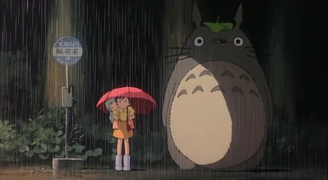

Totoro is a forest spirit that little Mei, and later her older sister Satsuki, encounter in a giant camphor tree
near their new home in the countryside. Although their father, a university professor, is with them when
they move, their mother is in the hospital, recovering from some unnamed illness. When Mei hears that her
mother's condition may be worsening, she resolves to visit her all by herself. When everyone realizes she's
missing, only Totoro knows how to find her! Totoro -- a giant furry thing ,a mixture of several animals:
tanukis, cats , and owls (the chevron markings on their chests and the "ooo"-ing sound they make with their
ocarinas at night). Mei - a young japanese girl wears beautiful orange hair, with braids hanging fairly left
and right ,cuddly round face.Satsuki - Mei's older sister,She had black short hair,tall and skinny ,boy like
personality. Catbus : bus which looks like an orange tebby cat (or a cat who works as a bus). the catbus
got mice to be his head light and help out to change the destination sign on catbus's forehead. and he's
got six legs in order to run faster than wind. Dustbunnies--those are little black fuzzy things, about the
size of a ping-pong ball.In Japanese, they were called "Makkuro Kurosuke" (a literal translation would be
"Pitch-black Blackie"